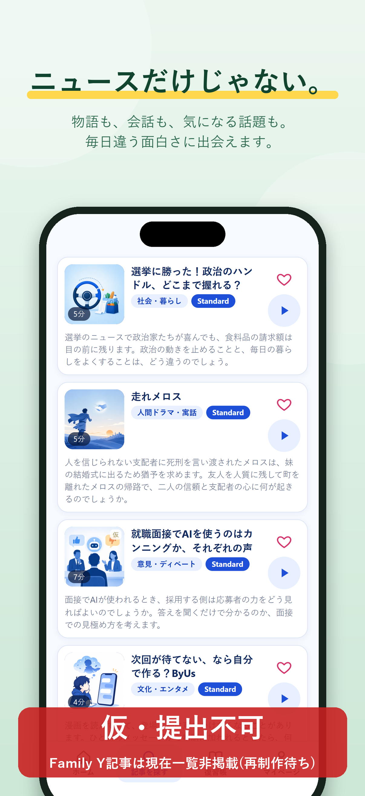
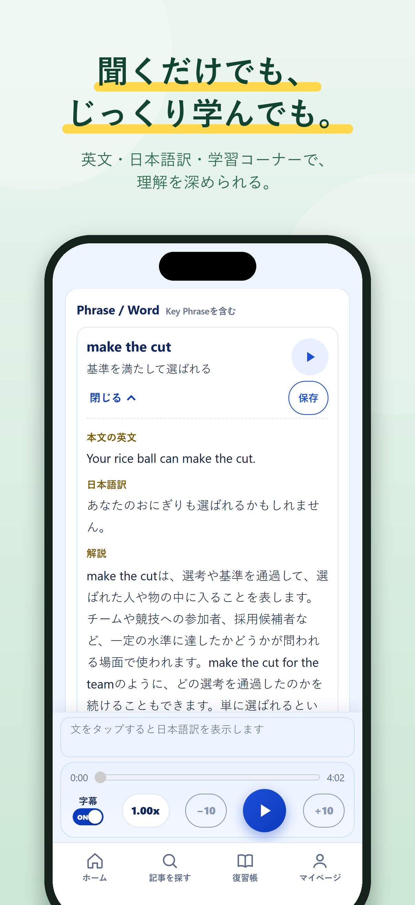
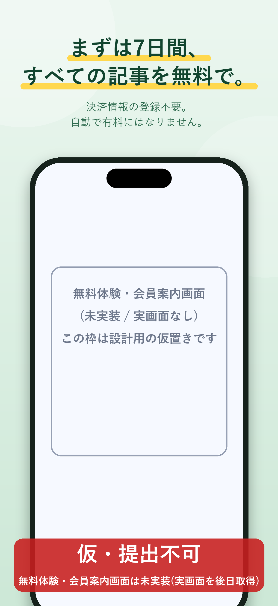

1206x2622 px(Apple分類「iPhone with Dynamic Island (medium display)」・公式表記の必須サイズ)。下段=実寸の約1/3(402px幅=端末相当)、最上段=縮小一覧(150px幅)。3・6枚目は「仮・提出不可」。1・2・4・5枚目は実画面(撮影元=iOSアプリ用webapp lock f0590b7、最新UI確定前=提出前に再撮影要)。


